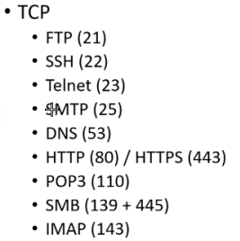

 
- FTPS (989, 990) IKE (500)
- SFTP (22) SYSLOG (514 , 6514)
- POP3S (995) ISAKMP
(500)
- IMAPS (993) L2TP (1701)
- LDAP (389) NTP (123)
- LDAPs (636) (NPS) RADIUS (1812 , 1813 , 1645 , 1646)
- NNTP (119) TFTP (69)
- RDP (3389) SNMP (162)
- SMTPS (465)
- TACACS+ (49)
- FTP (20 , 21)
- SCP (22)
SIP (5060 , 5061
) TCP/UDP
Kerberos Authentication (88 , 464) TCP/UDP